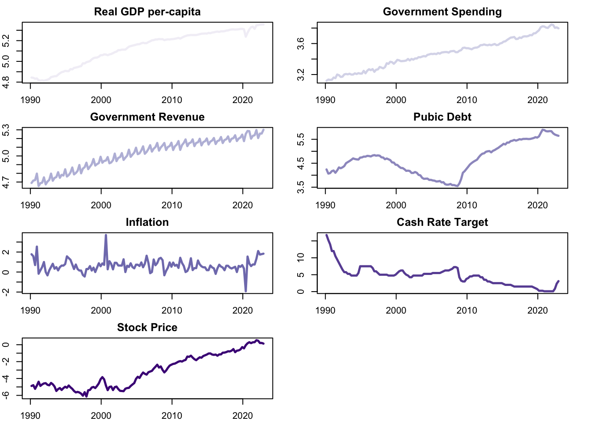
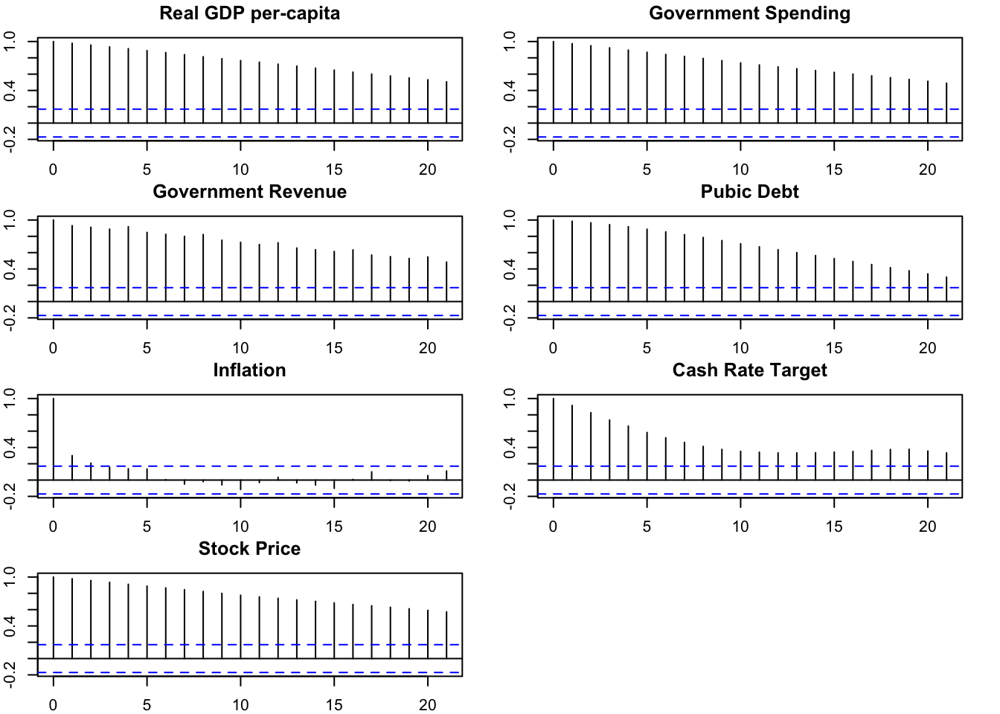
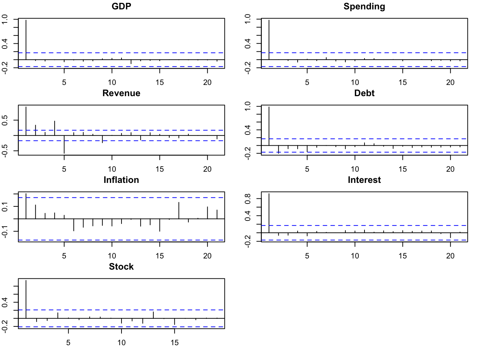
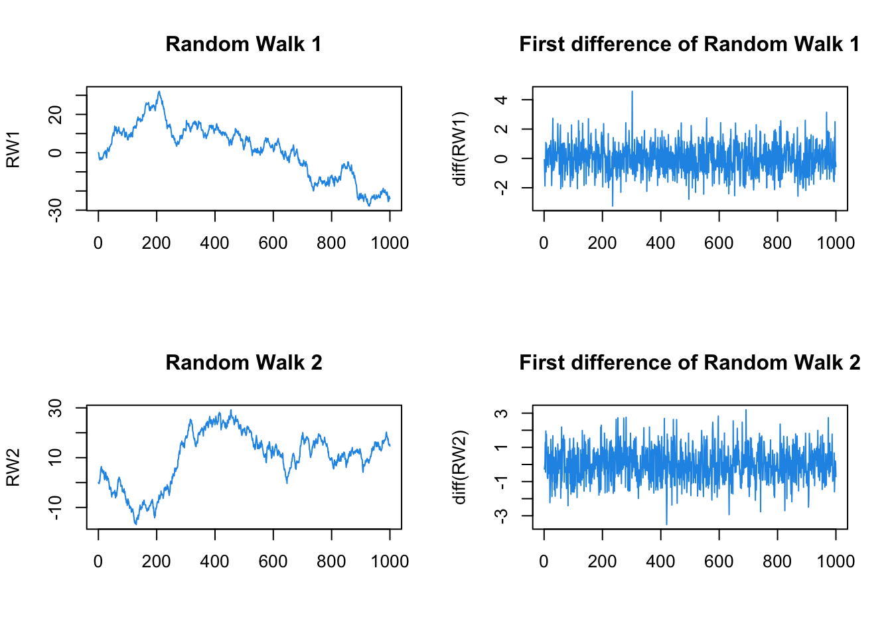
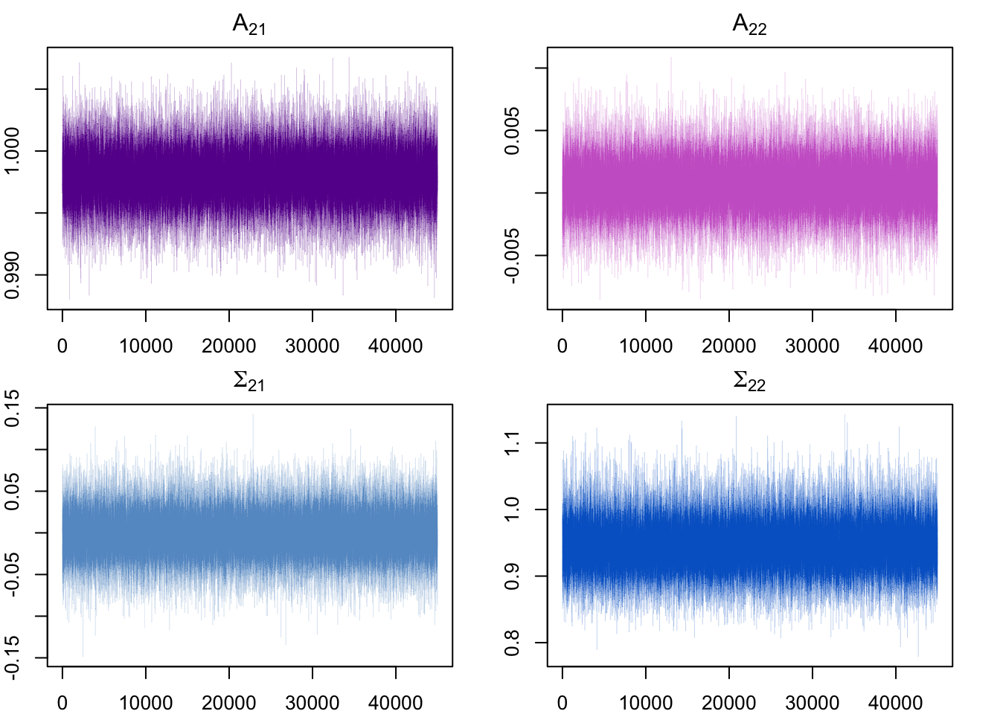
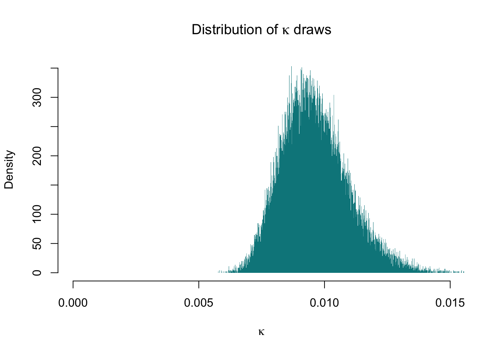

Fiscal Policy Shocks, Aggregate Economy and Stock Prices: Evidence from the Australian Economy
Abstract. This is a reserarch proposal, the project is about measuring fiscal policy effects using Bayesian Structural Vector Autoregression (SVAR) in Australian Economy. Impulse responses of stock prices and macroeconomic aggregates will be investigated.
Keywords. fiscal policy shock, SVAR, tax shocks, stock price, impulse response function
Motivation
This research project will investigate the effects on fiscal policy. How does tax cuts affect the economy? Will tax reductions boost stock market? These questions are crucial to the understanding of dynamic economics and the stimulus policy-making process, and are aimed to be answered in the background of Australian Economy in this project.
Effects of tax shocks on output has been investigated heavily in the previous literature. For example, Mountford and Uhlig (2009) found an unanticipated deficit-financed tax cut could stimulate the economy as a fiscal policy, using sign restrictions. They also revealed that investment falls when tax increases and government spending increases as investigated by Blanchard and Perotti (2002). Romer and Romer (2007) suggested exogeneous tax changes could end with large difference.
While fiscal policy shocks have evidence of playing a role in affecting output, the effects on stock prices is ambiguous. Afonso and Sousa (2011) illustrated government spending shocks have negative effect on stock prices, whereas expansionary tax shocks are related to increase of stock prices. However, Charziantoniou et al. (2013) argued there was no monetary policy indicators in Afonso and Sousa (2011), these authors suggested over 1991 to 2010, real and financial variables were not affected by government spending shocks significantly.
Although there is an unignorable amount of literature regarding the effects of fiscal policy, among which a large proportion of data analysed is based on US economy. This paper aims to fill the lack of such literature about Australian economy.
Data
The variables that are of interest include GDP, total government expenditure, total government revenue, cash rate target, inflation, public debt and stock prices. Those economic variables were collected from Reserve Bank of Australia (RBA) and Australian Bureau of Statistics (ABS), spanning quarterly from 1990 Q1 to 2022 Q4, including 132 observations.
Stock prices are data of All Ordinaries, which is the benchmark of Australian market with relative long history, separate financial sectors might be studied into detail in the future research. Inflation and cash rate target are also introduced in the model as controls. Original data are plotted in: Figure 1.

While GDP and government expenditure depict upward trend, government revenue shows increasing trend with seasonal patterns. Public debt kept relatively flat before the Global Financial Crisis (GFC), and started to increase after. Interest rate has a downward trend while stock prices exhibiting significant drop during GFC.
Variables are transformed into real per-capita terms and compute logarithms as in Mumtaz and Theodoridis (2020), except inflation and cash rate target. In this stage, only the sample including all variables ranging from 2001 Q2 to 2022 Q4 is considered in the following section. Plots are provided as Figure 2.
Table 1 provides statistics summary of all variables from 2001Q2 to 2022Q4.
| N | Mean | St.Dev. | Min | Max | |
|---|---|---|---|---|---|
| GDP | 132 | 5.131 | 0.164 | 4.813 | 5.356 |
| Spending | 132 | 3.472 | 0.197 | 3.119 | 3.846 |
| Revenue | 132 | 5.024 | 0.173 | 4.654 | 5.301 |
| Debt | 132 | 4.660 | 0.664 | 3.549 | 5.900 |
| Inflation | 132 | 0.650 | 0.617 | -1.923 | 3.704 |
| Interest | 132 | 4.605 | 2.906 | 0.100 | 16.750 |
| Stock | 132 | -3.126 | 1.981 | -6.135 | 0.534 |

Preliminary Results
ACF Plots as in Figure 3 show non-zero autocorrelations for at least 15 lags of variables except Inflation. PACF Plots as Figure 4 indicate significant and strong memory at the first lag of variables except Inflation, of, for which the first lag is also statistically significant but not strong.


Augmented Dickey-Fuller Test can be performed to test for stationarity under the null hypothesis of unit-root non-stationary, the results are shown as Table 2, from which we do not reject the null and conclude that all variables are unit-root non-stationary.
library(tseries)
adf <- as.data.frame(matrix(nrow=7,ncol=3,NA))
rownames(adf) <- colnames(df)
colnames(adf) <- c("Dickey-Fuller","Lag order", "p-value")
for (i in 1: ncol(df)){
adf_tmp <- adf.test(df[,i])
adf[i,"Dickey-Fuller"] <- round(as.numeric(adf_tmp[1]),3)
adf[i,"Lag order"] <- as.numeric(adf_tmp[2])
adf[i,"p-value"] <- round(as.numeric(adf_tmp[4]),3)
}
knitr::kable(adf, index=TRUE)| Dickey-Fuller | Lag order | p-value | |
|---|---|---|---|
| GDP | -1.691 | 5 | 0.705 |
| Spending | -2.563 | 5 | 0.342 |
| Revenue | -1.295 | 5 | 0.869 |
| Debt | -1.624 | 5 | 0.733 |
| Inflation | -3.123 | 5 | 0.109 |
| Interest | -4.007 | 5 | 0.011 |
| Stock | -2.510 | 5 | 0.364 |
Take the first difference and run the Augmented Dickey-Fuller Test again, it is sensible to conclude that variables except public debt and interest rate are integrated of order 1 as in Table 3. Public debt is integrated with order 2, since its second-order difference is stationary as Table 4.
| Dickey-Fuller | Lag order | p-value | |
|---|---|---|---|
| GDP | -5.393 | 5 | 0.010 |
| Spending | -4.358 | 5 | 0.010 |
| Revenue | -6.489 | 5 | 0.010 |
| Debt | -2.657 | 5 | 0.303 |
| Inflation | -6.211 | 5 | 0.010 |
| Interest | -4.167 | 5 | 0.010 |
| Stock | -5.032 | 5 | 0.010 |
| Dickey-Fuller | Lag order | p-value | |
|---|---|---|---|
| Debt | -6.87 | 5 | 0.01 |
Methodology
Bayesian Structural vector autoregression (SVAR) models to capture the dynamic and contemporaneous relationships between variables. The benchmark model is defined as:
\[\begin{align} B_0Y_t = b_0 + \sum_{i=1}^{p}B_{i}Y_{t-i}+u_t \end{align}\] \[\begin{align} u_t|Y_{t-1}\sim iid(0_N,I_N) \end{align}\]
\(Y_t\) is \(N\times1\) matrix of endogenous variables,N represents the number of endogeneous variables and p is the number of lags. \(B_0\) is \(N\times N\) matrix capturing contemporaneous relationships between variables, and \(u_t\) is \(N\times1\) vector conditionally on \(Y_{t-1}\) orthogonal structural shocks.
In particular, in this model, \(Y_t\) contains seven variables ordered as : (1) real per-capita GDP (\(GDP_t\)), (2) real per-capita government expenditure (\(Expenditure_t\)), (3) real per-capita government revenue (\(Revenue_t\)), (4) real per-capita public debt (\(Debt_t\)), (5) inflation (\(Inflation_t\)), (6) cash rate target (\(Interest_t\)), (7) real stock price (\(Stock_t\)).
\[\begin{align} Y_t=\begin{pmatrix} \\ GDP_t \\ Expenditure_t \\ Revenue_t \\ Debt_t \\ Inflation_t \\ Interest_t \\ Stock_t \end{pmatrix} \end{align}\]
The reduced form representation is: \[\begin{align*} Y_t = \mu_0 + \sum_{i=1}^{p}A_{i}Y_{t-i}+\epsilon_t \end{align*}\] \[\begin{align} \epsilon_t|Y_{t-1}\sim iid(0_N,\Sigma) \end{align}\]
The covariance matrix of \(\epsilon_t\) can be written as: \[\begin{align} \Sigma=B_0^{-1}{B_0^{-1}}^{'} \end{align}\]
Estimation Framework
Basic Model
Rewrite the reduced form equation in matrix: \[\begin{gather} Y = XA + E \\ \\ E|X \sim MN_{T \times N}(0_{T \times N},\Sigma,I_T) \end{gather}\] The Likelihood function would be: \[\begin{gather} L(A,\Sigma|Y,X) \propto det(\Sigma)^{-\frac{T}{2}} exp \left\{-\frac{1}{2} tr \left[ \Sigma^{-1}(Y-XA)'(Y-XA) \right] \right\} \\ \\ \propto det(\Sigma)^{-\frac{T}{2}} exp \left\{-\frac{1}{2} tr \left[ \Sigma^{-1}(A-\hat{A})'X'X(A-\hat{A}) \right] \right\} exp \left\{-\frac{1}{2} tr \left[\Sigma^{-1}(Y-X \hat{A})'(Y-X \hat{A}) \right] \right\} \\ \end{gather}\] From Maximum Likelihood Estimation, \[\begin{gather} \hat{A} = (X'X)^{-1}X'Y \\ \\ \hat{\Sigma} = \frac{1}{T} (Y-X \hat{A})'(Y-X \hat{A}) \end{gather}\]
In the basic model, we have prior as: \[\begin{gather} p(A,\Sigma) = p(A|\Sigma) p(\Sigma) \\ \\ A|\Sigma \sim MN_{K \times N} (\underline{A}, \Sigma , \underline{V}) \\ \\ \Sigma \sim IW_{N}(\underline{S},\underline{\nu}) \end{gather}\]
Parameters are as follows: \[\begin{gather} \underline{A} = [0_{N \times 1} \quad I_N \quad 0_{N \times (p-1)N}]' \\ \\ Var[vec(A)] = \Sigma \otimes \underline{V} \\ \\ \underline{V} = diag([\kappa_2 \quad \kappa_1 (p^{-2} \otimes I_N)]) \\ \\ p = [1,2,...p] \end{gather}\]
The full conditional posterior is: \[\begin{gather} p(A,\Sigma|Y,X) = p(A|Y,X,\Sigma)p(\Sigma|Y,X) \\ \\ p(A|Y,X,\Sigma) = MN_{K \times N}(\bar{A}, \Sigma, \bar{V}) \\ \\ p(\Sigma | Y, X) = IW_N(\bar{S},\bar{\nu}) \end{gather}\]
Derive the full conditional posterior: \[\begin{gather} P(A,\Sigma|Y,X) \propto L(A,\Sigma|Y,X)p(A,\Sigma) \\ \\ \propto L(A,\Sigma|Y,X)p(A|\Sigma)p(\Sigma) \\ \\ det(\Sigma)^{-\frac{T}{2}} \times exp \left\{-\frac{1}{2} tr \left[ \Sigma^{-1}(A-\hat{A})' X'X (A-\hat{A})\right] \right\} \\ \\ \times exp\left\{-\frac{1}{2}tr \left[ \Sigma^{-1}(Y-X\hat{A})'(Y-X\hat{A}) \right] \right\} \\ \\ \times det(\Sigma)^{-\frac{N+K+\underline{\nu}+1}{2}} \\ \\ \times exp\left\{-\frac{1}{2}tr \left[ \Sigma^{-1}(A-\underline{A})'\underline{V}^{-1}(A-\underline{A}) \right] \right\} \\ \\ \times exp \left\{ -\frac{1}{2} tr \left[ \Sigma^{-1} \underline{S} \right] \right\} \end{gather}\]
\[\begin{gather} p(A,\Sigma|Y,X) \propto det{(\Sigma)}^{-\frac{T+N+K+ \underline{\nu} +1}{2}} \times exp \left\{-\frac{1}{2}tr \left[ \Sigma^{-1} \left[(A-\hat{A})^{'}X'X(A-\hat{A})+(A-\underline{A})^{'} \underline{V}^{-1}(A-\underline{A}) + (Y-X\hat{A})^{'}(Y-X\hat{A})+\underline{S} \right]\right] \right\}\\ \\ \propto det{(\Sigma)}^{-\frac{T+N+K+ \underline{\nu} +1}{2}} \times exp\left\{ -\frac{1}{2} tr \left[ \Sigma^{-1} \left[ (A-\bar{A})^{'} \bar{V}^{-1} (A-\bar{A})+\underline{S} +Y^{'}Y + \underline{A}^{'} \underline{V}^{-1}\underline{A} -\bar{A}^{'} \bar{V}^{-1}\bar{A}\right]\right]\right\} \end{gather}\]
where we have posterior distribution parameters:
\[\begin{gather} \bar{V} = (X^{'}X+ \underline{V}^{-1})^{-1} \\ \\ \bar{A} = \bar{V}(X^{'}Y+\underline{V}^{-1} \underline{A}) \\ \\ \bar{\nu} = T + \underline{\nu} \\ \\ \bar{S} = \underline{S} + Y^{'}Y + A^{'}\underline{V}^{-1}\underline{A} - \bar{A}^{'}\bar{V}^{-1}\bar{A} \end{gather}\]
From above derivation, we can compute functions to calculate parameters:
GetPosterior.parameters <- function (X,Y,prior.parameters) {
A.prior <- prior.parameters$A.prior
V.prior <- prior.parameters$V.prior
S.prior <- prior.parameters$S.prior
nu.prior <- prior.parameters$nu.prior
V.bar.inv <- t(X)%*%X + diag(1/diag(V.prior))
V.bar <- solve(V.bar.inv)
A.bar <- V.bar%*%(t(X)%*%Y + diag(1/diag(V.prior))%*%A.prior)
nu.bar <- nrow(Y) + nu.prior
S.bar <- S.prior + t(Y)%*%Y + t(A.prior)%*%diag(1/diag(V.prior))%*%A.prior - t(A.bar)%*%V.bar.inv%*%A.bar
return (list(V.bar = V.bar,
A.bar = A.bar,
nu.bar = nu.bar,
S.bar = S.bar))
}Then posterior distributions of \(A\) and \(\Sigma\) can be drawn:
DrawPosterior <- function (N,S,p,posterior.parameters){
K = 1+N*p
A.bar <- posterior.parameters$A.bar
V.bar <- posterior.parameters$V.bar
S.bar <- posterior.parameters$S.bar
nu.bar <- posterior.parameters$nu.bar
Sigma.posterior = rWishart(S, df=nu.bar, Sigma=solve(S.bar))
Sigma.posterior = apply(Sigma.posterior,3,solve)
Sigma.posterior = array(Sigma.posterior,c(N,N,S))
A.posterior = array(rnorm(prod(c(dim(A.bar),S))),c(dim(A.bar),S))
B.posterior = array(NA,c(N,N,S))
L = t(chol(V.bar))
B1.tilde.s = array(NA,c(N,K,S))
for (s in 1:S){
cholSigma.s = chol(Sigma.posterior[,,s])
B.posterior[,,s]= t(cholSigma.s)
A.posterior[,,s]= A.bar + L%*%A.posterior[,,s]%*%cholSigma.s
B1.tilde.s[,,s] = B.posterior[,,s]%*%t(A.posterior[,,s])
}
return(list(A.posterior = A.posterior,
B.posterior = B.posterior,
B1.tilde.s = B1.tilde.s,
Sigma.posterior = Sigma.posterior)
)
}After the posterior draws, we apply sign restrictions to identify the model. For any set of sign restrictions, given a parameter point \(B_{+},B_{0}\) that satisfies such restrictions, there always exists an orthogonal matrix Q, arbitrarily close to an identity such that \(QB_{+},QB_{0}\) satisfy the sign restrictions.
The Algorithm from Fry, Pagan (2011) is implemented to transfer SF parameters \((\tilde{B_+},\tilde{B_0})\) to parameters \((B_{+},B_{0})\) such the restrictions of interest holds.
ImposeSignRestriction <- function (restrictions,N,S,p,posterior.draws){
A.posterior <- posterior.draws$A.posterior
Sigma.posterior <- posterior.draws$Sigma.posterior
B.posterior <- posterior.draws$B.posterior
B1.tilde.s <- posterior.draws$B1.tilde.s
R1 <- diag(restrictions)
B0.draws = array(NA,c(N,N,S))
B1.draws = array(NA,c(N,(1+N*p),S))
i.vec = c()
for (s in 1:S){
A = A.posterior[,,s]
Sigma = Sigma.posterior[,,s]
B0.tilde = B.posterior[,,s]
B1.tilde = B1.tilde.s[,,s]
i=1
sign.restrictions.do.not.hold = TRUE
while (sign.restrictions.do.not.hold){
X = matrix(rnorm(N*N),N,N) # draw iid normal X
QR = qr(X, tol = 1e-10)
Q = qr.Q(QR,complete=TRUE)
R = qr.R(QR,complete=TRUE)
Q = t(Q %*% diag(sign(diag(R))))
B0 = Q%*%B0.tilde # N by N
B1 = Q%*%B1.tilde # N by N
B0.inv = solve(B0)
check = prod(R1 %*% B0.inv %*% diag(N)[,1] > 0)
if (check==1){sign.restrictions.do.not.hold=FALSE}
i=i+1
}
i.vec = c(i.vec,i)
B0.draws[,,s] = B0
B1.draws[,,s] = B1
}
return (list(B0.draws = B0.draws,
B1.draws = B1.draws))
}Extended Model
In the extended model,instead of setting \(\kappa_1\) and \(\kappa_2\) as fixed values, the overall shrinkage level for auto-regressive slopes \(\kappa_1\) is assumed to follow an inverse gamma 2 distribution \(IG2(\underline{S}_{\kappa},\underline{\nu}_{\kappa})\), and shrinkage of constant term \(\kappa_2\) can be set as \(100 \times \kappa_1\).
Under this setting, \[\begin{gather} p(\kappa|A,\Sigma,Y,X) \\ \\ p(A,\Sigma|X,Y,\kappa) \end{gather}\]
The full conditional posterior of \((A,\Sigma)\) is: \[\begin{gather} p(A,\Sigma|X,Y,\kappa) \propto L(A,\Sigma|Y,X) \times p(A|\Sigma,\kappa) \times p(\Sigma) \\ \\ \propto det(\Sigma)^{-\frac{K}{2}} exp \left\{-\frac{1}{2}tr \left[ \Sigma^{-1}(Y-XA)^{'}(Y-XA)\right] \right\} \\ \\ \times exp \left\{ -\frac{1}{2} tr \left[ \Sigma^{-1}(A-\underline{A})^{'}(\kappa \underline{V})^{-1}(A-\underline{A}) \right] \right\} \\ \\ \times det(\Sigma)^{\frac{\underline{\nu}+N+1}{2}} exp\left\{-\frac{1}{2} tr \left[\Sigma^{-1}\underline{S} \right] \right\} \end{gather}\]
We recognize kernel of matrix-normal inverse Wharst distribution, with parameters as follows: \[\begin{gather} \bar{V} = (X'X+(\kappa \underline{V}))^{-1} \\ \\ \bar{A} = \bar{V}(X'Y+(\kappa \underline{V}^{-1}\underline{A})) \\ \\ \bar{S} = \underline{S}+Y'Y+A'(\kappa \underline{V})^{-1} - \bar{A}^{'} \bar{V}^{-1}\bar{A} \\ \\ \bar{\nu} = T + \underline{\nu} \end{gather}\]
The full-conditional posterior of \(\kappa\) is: \[\begin{gather} p(\kappa | A,\Sigma, Y,X) \propto L(Y|X,A,\Sigma) \times p(\kappa) \times p(A|\Sigma,\kappa) \times p(\Sigma) \\ \\ \propto p(\kappa) \times p(A|\Sigma,\kappa) \\ \\ \propto (\kappa)^{-\frac{\underline{\nu}_{\kappa}+2}{2}} exp\left\{ -\frac{1}{2} \frac{\underline{S}_{\kappa}}{\kappa} \right\} \times exp\left\{-\frac{1}{2}tr\left[\Sigma^{-1}(A-\underline{A})^{'} \frac{1}{\kappa}(\underline{V})^{-1} (A-\underline{A})\right]\right\} \times det(\kappa \underline{V})^{-\frac{N}{2}} \\ \\ \propto (\kappa)^{-\frac{\underline{\nu}_{\kappa}+2+NK}{2}} exp \left\{-\frac{1}{2} \frac{1}{\kappa} \left[\underline{S}_{\kappa} + tr \left[\Sigma^{-1}(A-\underline{A})^{'}\underline{V}^{-1}(A-\underline{A}) \right]\right] \right\} \end{gather}\] which we recognise the kernel of inverse gamma 2 distribution with \[\begin{gather} \bar{S}_{\kappa} = \underline{S}_{\kappa}+tr \left[ \Sigma^{-1} (A-\underline{A})^{'} \underline{V}^{-1} (A-\underline{A})\right] \\ \\ \bar{\nu}_{\kappa} = \underline{\nu}_{\kappa}+NK \end{gather}\]
Gibbs Sampler can be conducted to get the posterior draws of the extended model, for which we can,
Initialize \(\kappa\) at \(\kappa^{(0)}\).
At each iteration s:
- Draw \((A,\Sigma)^{(s)} \sim p(A,\Sigma| X,Y,\kappa^{(s-1)})\)
- Draw \(\kappa^{(s)} \sim p(\kappa|Y,X,A,\Sigma)\)
Repeat 1 and 2 for \((S_1 + S_2)\) times.
Discard the first \(S_1\).
DrawPosterior.e <- function (Y,X,prior.parameters,nu.kappa,S.kappa,S1,S2){
N = ncol(Y)
K = ncol(X)
T = nrow(Y)
A.prior <- prior.parameters$A.prior
V.prior <- prior.parameters$V.prior
S.prior <- prior.parameters$S.prior
nu.prior <- prior.parameters$nu.prior
kappa <- c()
A.posterior <- array(NA,c(K,N,(S1+S2)))
Sigma.posterior <- array(NA,c(N,N,(S1+S2)))
B.posterior <- array(NA,c(N,N,(S1+S2)))
B1.tilde.s <- array(NA,c(N,K,(S1+S2)))
# Initialize kappa.0
kappa[1] <- 1
nu.bar <- nu.prior + T
nu.kappa.bar <- nu.kappa + N*K # N*K
for (s in 1:(S1+S2)){
# STEP 1: draw (A Sigma).s from MNIW(A.bar,V.bar,S.bar,nu.bar)
V.bar.inv <- t(X)%*%X + solve(kappa[s]*V.prior)
V.bar <- solve(V.bar.inv)
A.bar <- V.bar%*%(t(X)%*%Y + diag(1/diag(kappa[s]*V.prior))%*%A.prior)
S.bar <- S.prior + t(Y)%*%Y + t(A.prior)%*%diag(1/diag(kappa[s]*V.prior))%*%A.prior - t(A.bar)%*%V.bar.inv%*%A.bar
draw.sigma.inv = solve(rWishart(1, df=nu.bar, Sigma=solve(S.bar))[,,1])
Sigma.posterior[,,s] = draw.sigma.inv
cholSigma.s = chol(Sigma.posterior[,,s])
A.posterior[,,s] = matrix(MASS::mvrnorm(1,as.vector(A.bar),Sigma.posterior[,,s]%x%V.bar),ncol=N)
L <- t(chol(V.bar))
B.posterior[,,s] <- t(chol(Sigma.posterior[,,s]))
B1.tilde.s[,,s] <- B.posterior[,,s]%*%t(A.posterior[,,s])
# STEP 2: draw kappa.s from IG2(S.bar, nu.bar)
S.kappa.bar <- S.kappa + sum(diag( draw.sigma.inv %*% t(A.posterior[,,s]-A.prior)%*% diag(1/diag(V.prior)) %*% (A.posterior[,,s]-A.prior)))
kappa[s+1] <- S.kappa.bar / rchisq(1, df=nu.kappa.bar)
}
return(list(Sigma.posterior.e = Sigma.posterior[,,(S1+1):(S1+S2)],
A.posterior.e = A.posterior[,,(S1+1):(S1+S2)],
B1.tilde.s.e = B1.tilde.s[,,(S1+1):(S1+S2)],
B.posterior.e = B.posterior[,,(S1+1):(S1+S2)],
kappa.e = kappa[(S1+1):(S1+S2)]))
}The sign restrictions would be implied in the same way as the basic model.
Artificial Data Estimation
1000 observations of bi-variate Gaussian random walk processes with the covariance matrix equal to the identity matrix of order 2 are generated as Figure 5 to test whether the modeling frameworks are able to estimate true parameters of the data generating process.
par(mfrow=c(2,2))
set.seed(2023)
RW1 <- arima.sim(model= list(order = c(0, 1, 0)), n=1000, mean=0, sd=1)
plot.ts(RW1,main="Random Walk 1", col=4)
plot.ts(diff(RW1),main="First difference of Random Walk 1", col=4)
RW2 <- arima.sim(model= list(order = c(0, 1, 0)), n=1000, mean=0, sd=1)
plot.ts(RW2,main="Random Walk 2", col=4)
plot.ts(diff(RW2),main="First difference of Random Walk 2", col=4)
RW <- cbind(RW1,RW2)
Y = RW[2:nrow(RW),]
X = matrix(1,nrow(Y),1)
X = cbind(X,RW[2: nrow(RW)-1,])
N = ncol(Y) # number of variables
p = 1 # number of lags
S = 50000 # sample size
K = N*p + 1
A.hat = solve(t(X)%*%X)%*%t(X)%*%Y
Sigma.hat = t(Y-X%*%A.hat)%*%(Y-X%*%A.hat)/nrow(Y)
restrictions = c(-1,1)Basic Model
Table 5 and Table 6 show the matrix of \(A\) and \(\Sigma\), suggesting the basic model estimation using artificial data of 1 lag and constant term is showing zero posterior mean of the autoregressive and covariance matrices are close to an identity matrix and the posterior mean of the constant term is close to zeros too.
| V1 | V2 |
|---|---|
| 0.0252 | 0.0522 |
| 1.0162 | -0.0008 |
| -0.0060 | 0.9402 |
| V1 | V2 |
|---|---|
| 0.9821 | -0.0002 |
| -0.0002 | 0.9802 |
Extended Model
Then we can use the same data to check whether the extension model is working.
Figure 6 plots the S2 draws of Gibbs Sampler, and it shown to be stationary for A and \(\Sigma\).

Figure 7 shows the distribution of Gibbs Sampler draws of \(\kappa\), which is right skewed and strictly positive, which make it appropriate to parameterize variance parameters.

Table 7 and Table 8 also shows desired results, suggesting the extended model is also working.
| 0.0255 | 0.0520 |
| 1.0160 | -0.0007 |
| -0.0060 | 0.9405 |
| 0.9825 | 0.0000 |
| 0.0000 | 0.9801 |
Empirical Estimation
References
Afonso, A., R. M. Sousa (2011): What are the effects of Fiscal policy on asset markets? Economic Modelling, 28, 1871-1890.
Blanchard O, Perotti R. (2002). An empirical characterization of the dynamic effects of changes in government spending and taxes on output. Quarterly Journal of Economics. 117(4): 1329–1368.
Chatziantoniou, I., D. Duffy, G. Filis (2013): Stock market response to monetary and Fiscal policy shocks: Multi-country evidence, Economic Modelling, 30, 754-769.
Mountford, A., H. Uhlig (2009): What are the effects of Fiscal policy shocks? Journal of Applied Econometrics, 24, 960-992.
Mumtaz, H., Theodoridis, K. (2020). Fiscal policy shocks and stock prices in the United States, European Economic Review, Volume 129
Romer, C.D. and Romer, D.H. (2007) The Macroeconomic Effects of Tax Changes: Estimates Based on a New Measure of Fiscal Shocks. NBER Working Paper No. 13264, National Bureau of Economic Research, Cambridge.